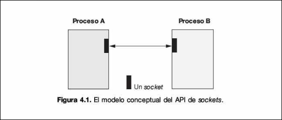
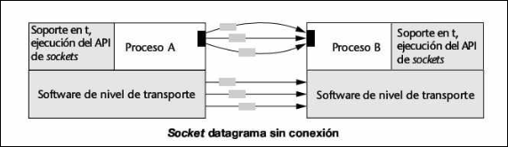
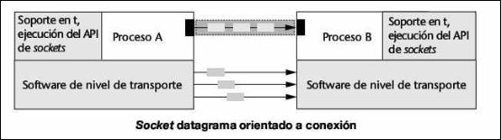
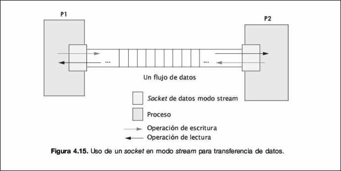
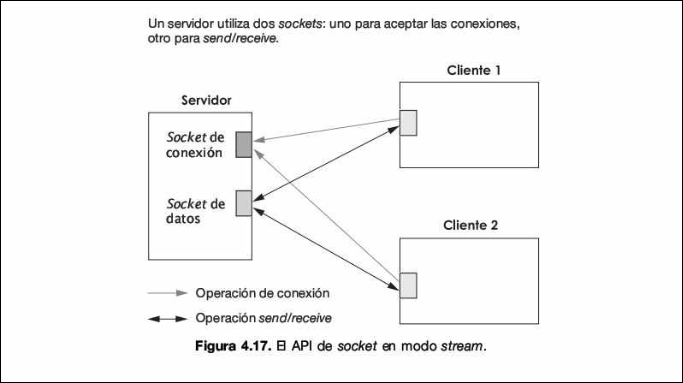

El API de Sockets
2.1 Introducción
Antes de profundizar en el código y los protocolos, es vital situar este tema en el mapa de la asignatura. En la jerarquía de abstracción de la comunicación distribuida, nos encontramos en el Nivel 0: Paso de Mensajes.
-
Baja Abstracción (Sockets): Trabajamos directamente con el transporte de bytes entre procesos. Tú defines cómo se envían los datos, cuándo se leen y qué estructura tienen. Es la base de la pirámide.
-
Arquitecturas Básicas: Utilizando sockets, construimos los paradigmas Cliente-Servidor (centralizado) y P2P (descentralizado).
-
Alta Abstracción (Futuros temas): Mecanismos como RPC (Remote Procedure Call), RMI (Remote Method Invocation) o los ORB (Object Request Brokers) son "capas de azúcar sintáctico" y gestión automática que se construyen sobre el API de Sockets. Entender sockets es entender la "fontanería" que hace posible todo lo demás
2.2 Conceptos Fundamentales
El API de Sockets es la interfaz de programación estándar para la comunicación entre procesos (IPC - Inter-Process Communication).
Info
API significa Application Programming Interface. Imagina que el SO es una fortaleza cerrada que controla el hardware ( la tarjeta de red) . Tú, como programador no puedes tocar los cables ni los voltajes directamente. El API de sockets es el conjunto de funciones estandarizadas que el SO te ofrece para pedirle servicios de red.
Un Socket se define conceptualmente como un punto final (endpoint) de comunicación. Es una abstracción que permite a un proceso enviar y recibir mensajes hacia/desde otro proceso, ya sea en la misma máquina o a través de una red.

Los sockets operan sobre la pila de protocolos TCP/IP, que es independiente del fabricante y soporta desde redes locales (LAN) hasta redes globales (WAN) como internet.
Para que dos procesos se comuniquen, necesitamos identificar de forma única quién habla con quién. Esto se logra mediante una asociación, que es una tupla de 5 elementos:
- Protocolo: TCP o UDP.
- Dirección IP Local (
bits): Identifica la máquina origen. - Puerto Local (
bits): Identifica el proceso origen dentro de la máquina. - Dirección IP Remota (
bits): Identifica la máquina destino. - Puerto Remoto (
bits): Identifica el proceso destino.
2.3 Protocolos de Transporte: UDP vs TCP
El API de Sockets nos permite elegir cómo queremos transportar nuestros datos. Esta elección define la fiabilidad y el rendimiento de nuestra aplicación distribuida.
2.3.1 UDP (User Datagram Protocol)
Es un protocolo no orientado a conexión. Se basa en el envío de mensajes discretos (datagramas).
Características:
- No fiable: no garantiza que los datos lleguen, ni que lleguen en orden
- Límites de mensaje: se respetan las fronteras. Si envías 1 paquete de 500 bytes, el receptor recibe 1 paquete de 500 bytes
- Sin QoS (Quality of Service): no garantiza ancho de banda ni latencia
- Simplicidad: al tener menos sobrecarga de control, es muy rápido
Uso ideal: aplicaciones donde la velocidad prima sobre la exactitud, como videoconferencias o telefonía IP ( si se pierde un frame de video, no importa, pero no podemos esperar a retransmitirlo).

2.3.2 TCP (Transmission Control Protocol)
Es un protocolo orientado a conexión. Antes de enviar datos, se establece un canal virtual entre emisor y receptor.
Características:
- Fiabilidad Total: Garantiza la entrega correcta y el orden secuencial de los paquetes. Si algo se pierde, se retransmite automáticamente.
- Stream (Flujo de Bytes): No hay fronteras de mensaje. Si envías 3 paquetes de 10 bytes, el receptor podría leer 30 bytes de golpe o 15 y 15. Es como una tubería de agua.
- Bidireccional: Ambos lados pueden leer y escribir simultáneamente.
Uso ideal: Aplicaciones que requieren integridad de datos total: Web (HTTP), Correo (SMTP), Transferencia de archivos (FTP), Telnet .

2.4 Implementación en Java: Sockets Orientados a Conexión (TCP)
En el modelo Stream (flujo) , la comunicación es exclusiva entre dos procesos conectados. Un socket stream no sirve para hacer "broadcast" a muchos procesos a la vez.
Info
Stream (Tubo/TCP): Es un flujo continuo de bytes sin fronteras internas.
- Si tú envías "HOLA" y luego "MUNDO" por un stream, el receptor ve simplemente un chorro de bytes:
HOLAMUNDO. - El receptor no sabe si lo enviaste todo junto o en dos partes.
- Garantía: Es una conexión fiable, ordenada y bidireccional, similar a las tuberías (pipes) de Unix.

2.4.1 Arquitectura Cliente-Servidor en TCP
El servidor debe estar activo antes que el cliente. El proceso se basa en dos tipos de sockets en el lado del servidor:
- Socket de Conexión (
ServerSocket): solo se encarga de esperar clientes en un puerto (hacerlisten) - Socket de Datos (
Socket): cuando llega un cliente, elServerSocketlo acepta y crea un nuevo socket dedicado exclusivamente a hablar con ese cliente. Esto permite al servidor seguir aceptando nuevos clientes en el socket de conexión original.

2.4.2 Diagrama de Flujo y Primitivas
- Servidor: Crea el socket (
socket()), lo ata a un puerto (bind()), y se pone a escuchar (listen()) - Servidor: llama a
accept(). Esta es una operación bloqueante. El proceso servidor se duerme hasta que alguien llame a la puerta. - Cliente: crea su socket y solicita conexión (
connect()) a la IP/Puerto del servidor - Handshake: se establece la conexión. El método
accept()del servidor despierta y devuelve un nuevo objeto socket para la comunicación. - Intercambio: ambos usan flujos de entrada/salida (
InputStream/OutputStream) pararead()ywrite() - Cierre: se usa
close()para terminar la conexión
Info
Todas estas operaciones que aparecen entre paréntesis son proporcionadas por Unix, si haces en un terminal man funcion, te pone la info. Son funciones de la API de sockets.
2.4.3 Código Java Esencial (TCP)
En Java, usamos java.net.ServerSocket y java.net.Socket.
Servidor:
ServerSocket serverSocket = new ServerSocket(puerto); // Puerto de escucha
Socket incoming = serverSocket.accept(); // BLOQUEANTE: Espera cliente
// Una vez aquí, tenemos conexión. Obtenemos los streams:
DataInputStream in = new DataInputStream(incoming.getInputStream());
DataOutputStream out = new DataOutputStream(incoming.getOutputStream());
// Leer y Escribir
out.writeByte(5);
System.out.println(in.readByte());
Info
Java encapsula la complejidad de las llamadas al sistema originales de Unix. Cuando haces ServerSocket servidor = new ServerSocket(8080);. Por debajo ocurren 3 cosas:
socket(): pide al SO que cree un descriptor de archivo para un nuevo socketbind(8080): se vincula este socket a la dirección IP local y al puerto 8080.listen(): se marca el socket como pasiva, indicando que esté preparado para encolar conexiones entrantes
Cliente:
Socket socket = new Socket("direccion_servidor", puerto asignado en servidor); // Intenta conectar
// Si no hay excepción, estamos conectados.
2.4.4 Código Java Multihilo (TCP)
El problema es que mientras el servidor habla con el "Cliente A", el "Cliente B" tiene que esperar en la cola. Si el Cliente A tarda 1 hora, el Cliente B se aburre y se va.
Para solucionar esto, usamos Hilos (Threads). El objetivo es que el hilo principal (main) solo se dedique a recibir gente en la puerta, y delegue la conversación a hilos trabajadores. De todas formas los hilos los explicaré al final de este pdf.
Estrategia: "El Conserje y los Botones"
- Hilo Principal (El Conserje): Su único trabajo es estar en el bucle
accept(). - Hilos Trabajadores (Los Botones): Cuando llega un cliente, el conserje crea un nuevo hilo, le pasa el socket del cliente y vuelve a la puerta a esperar al siguiente.
Nota
Los hilos se explican con más detalle al final del tema
Servidor:
import java.net.*;
import java.io.*;
public class ServidorMultihilo {
public static void main(String[] args) {
try {
// 1. Constructor: Hace socket() + bind() + listen()
ServerSocket serverSocket = new ServerSocket(8189);
System.out.println("Servidor iniciado. Esperando clientes...");
while (true) {
// 2. accept(): BLOQUEANTE. Espera a un cliente.
// Cuando llega alguien, retorna un socket DEDICADO a ese cliente.
Socket socketCliente = serverSocket.accept();
// 3. MULTIHILO: En lugar de atenderlo aquí, creamos un hilo.
System.out.println("Cliente conectado. Creando hilo para atenderlo.");
// Creamos una instancia de nuestro "Manejador" (ver abajo)
ManejadorCliente tarea = new ManejadorCliente(socketCliente);
Thread hilo = new Thread(tarea);
// 4. Arrancar el hilo.
// Esto libera al 'main' para volver arriba al 'accept()' inmediatamente.
hilo.start();
}
} catch (IOException e) {
e.printStackTrace();
}
}
}
Cliente:
// Implementamos Runnable para que pueda ser ejecutado por un Thread
class ManejadorCliente implements Runnable {
private Socket miSocket; // Referencia al socket exclusivo de ESTE cliente
public ManejadorCliente(Socket s) {
this.miSocket = s;
}
@Override
public void run() {
try {
// Aquí va toda la lógica de read/write que antes tenías en el main
// [cite: 510-511]
DataInputStream in = new DataInputStream(miSocket.getInputStream());
DataOutputStream out = new DataOutputStream(miSocket.getOutputStream());
// Ejemplo: Eco
String mensaje = in.readUTF(); // Bloquea solo a ESTE hilo
System.out.println("Recibido: " + mensaje);
// Simular proceso lento (ej. consulta a base de datos)
Thread.sleep(2000);
out.writeUTF("Eco: " + mensaje);
} catch (Exception e) {
e.printStackTrace();
} finally {
try {
// IMPORTANTE: Cerrar el socket del cliente al terminar
miSocket.close();
} catch (IOException e) { e.printStackTrace(); }
}
}
}
2.5 Implementación en Java: Sockets No Orientados a Conexión (UDP)
En el modelo Datagrama, no hay conexión persistente. Cada paquete es independiente y lleva consigo la dirección del destino. Son como cartas, envías una, luego otra.
2.5.1 Clases Clave
DatagramSocket: es el buzón, sirve tanto para enviar como para recibir. Se liga a un puerto local (bind)DatagramPacket: es la carta. Contiene los datos (array de bytes) y, si es para enviar, la dirección IP y puerto del destinatario.
2.5.2 Flujo de Comunicación
Al contrario que en TCP, aquí no hay accept ni connect (en el sentido estricto de establecimiento de sesión).
- Receptor(Servidor): crea socket en puerto conocido. Llama a
receive(). Se bloquea hasta que llega un paquete. - Emisor(Cliente): crea paquete con datos+dirección destino. Llama a
send() - Receptor:
receive()rellena el paquete con los datos y la dirección de quien lo envío (util para responder)
Info
receive() usa por debajo la funcion de Unix recvfrom
Peligro de Concurrencia: En UDP, si múltiples procesos envían datos al mismo socket receptor simultáneamente, los mensajes se intercalan en la cola de recepción sin orden predecible. El receptor debe gestionar esta "mezcla".
2.5.3 Código Java Esencial (UDP)
Receptor:
DatagramSocket ds = new DatagramSocket(2345); // Escuchar en puerto 2345
byte[] buffer = new byte[1024];
DatagramPacket dp = new DatagramPacket(buffer, buffer.length);
ds.receive(dp); // BLOQUEANTE
// Datos recibidos en buffer. Info del remitente en dp.getAddress()
Info
DatagramSocket ds = new DatagramSocket(2345); por debajo llama a socket() y a bind(), no usa ni listen() ni accept()
Diagrama Mental de la Diferencia
- Constructor TCP (
ServerSocket): "Contrato una línea telefónica (socket), me asignan el número (bind) y me siento a esperar que suene para descolgar (listen+accept)." - Constructor UDP (
DatagramSocket): "Instalo un buzón en la calle (socket) y le pinto mi número de casa (bind). Ya está. El cartero puede tirar cartas dentro cuando quiera."
Emisor:
DatagramSocket ds = new DatagramSocket(); // Puerto aleatorio disponible
InetAddress receiverHost = InetAddress.getByName("localhost");
byte[] data = "Hola".getBytes();
DatagramPacket dp = new DatagramPacket(data, data.length, receiverHost, 2345);
ds.send(dp); // Envío "fuego y olvido"
Constructores de DatagramPacket:
DatagramPacket(byte[] data, int length, InetAddress receiver, int port);
DatagramPacket(byte[] data, int length);
El primero sirve para enviar una paquete UDP, el parámetro data almacena el contenido del mensaje, length indica el tamaño del mensaje y la dirección y el puerto se corresponden con los datos del receptor del mensaje.
El segundo sirve para recibir paquetes UDP, data es la variable que almacena el mensaje recibido y length indica el tamaño máximo del mensaje a recibir.
2.6 Técnicas Avanzadas y Robustez
2.6.1 Gestión de Bloqueos (Timeouts)
Por defecto, leer de un socket (read o receive) congela el programa eternamente si no llegan datos. Para evitar "cuelgues" indefinidos en sistemas distribuidos reales, debemos programar un Timeout.
- Método:
socket.setSoTimeout(int milisegundos). - Si expira el tiempo, se lanza una excepción
InterruptedIOException, permitiendo al programa recuperar el control .
2.6.2 Multidifusión (Multicast)
La multidifusión permite enviar un solo paquete y que sea recibido por un grupo de ordenadores, optimizando el ancho de banda. Se basa en UDP.
Funcionamiento:
- El emisor envía a una IP de clase D.
- Los receptores deben unirse explícitamente al grupo usando
joinGroup()sobre unMulticastSocket. - Los routers con capacidad multicast replican los paquetes solo hacia las redes donde hay miembros del grupo.
- El TTL (Time To Live) controla cuántos saltos de router puede atravesar el paquete, limitando su alcance (local vs internet)
Info
Una IP de Clase D es una dirección lógica de 32 bits que comienza por 1110, utilizada para identificar un grupo de interés compartido en lugar de una máquina física específica. Direcciones que empiezan en un rango entre [224-239].
Nota
Broadcast: difusión a todos los dispositivos de una red Multicast: difusión a todos los dispositivos de una subred
2.7 Hilos en Java
Un hilo es una secuencia de control dentro de un proceso que ejecuta instrucciones de manera independiente.
- Los procesos son entidades pesadas: requieren llamadas al sistema y cambios de contexto costosos.
- Los hilos son entidades ligeras: comparten el espacio de memoria del proceso y su cambio de contexto es menos costoso.
2.7.1 Creación de Hilos
En Java, existen dos formas principales de definir un hilo. En ambos casos, el código que ejecuta el hilo se define dentro del método run(), pero el hilo se lanza llamando a start().
Heredando de la clase Thread
Se crea una clase hija de Thread y se sobrescribe el método run()
public class MiHilo extends Thread {
public void run() {
// Código del hilo
}
}
// Uso:
Thread hilo = new MiHilo();
hilo.start();
Implementando la interfaz Runnable
Útil si tu clase ya hereda de otra. Se implementa Runnable y se pasa la instancia al constructor de Thread.
public class MiTarea implements Runnable {
public void run() {
// Código
}
}
// Uso:
MiTarea tarea = new MiTarea();
Thread hilo = new Thread(tarea);
hilo.start();
2.7.2 Ciclo de Vida y Estados
La Java Virtual Machine (JVM) gestiona los hilos a través de varios estados:
- Creado (New): El objeto existe, pero no se ha llamado a
start(). - Ejecutable (Runnable): Listo para correr cuando la JVM lo decida.
- En Ejecución (Running): Usando la CPU actualmente.
- Puede ceder paso con
yield().
- Puede ceder paso con
- Bloqueado (Blocked): Inactivo esperando un evento (E/S, fin de
sleep,notify, etc.) . - Finalizado (Terminated): Terminó el método
run().
Info
Si haces hilo.start() sobre un hilo que ya esta corriendo se lanza una excepción, si quieres lanzar dos veces el mismo hilo, sus referencias han de ser diferentes.
2.7.3 Sincronización (Sección Crítica)
Para evitar conflictos cuando varios hilos acceden a recursos compartidos, Java usa cerrojos (locks) mediante la palabra clave synchronized. Solo un hilo puede estar dentro de un bloque sincronizado a la vez.
Formas de uso:
- Bloque Sincronizado: Protege un fragmento de código usando un objeto como cerrojo.
synchronized(objetoCerrojo) {
// Sección crítica
}
- Método Sincronizado: Todo el método es crítico; el cerrojo es el propio objeto (
this) . Por lo que no se puede usar ningún otro método del código mientras esté ocupado este.
public synchronized void metodo() { ... }
2.7.4 Coordinación de Hilos (Wait y Notify)
Para problemas como el Productor-Consumidor, los hilos deben comunicarse. Se usan métodos de la clase Object dentro de bloques synchronized.
wait(): El hilo suelta el cerrojo y se duerme hasta ser avisado. Si se interrumpe, lanzaInterruptedException.notify(): Despierta a un hilo aleatorio que esté esperando en ese objeto.notifyAll(): Despierta a todos los hilos esperando (más seguro para evitar bloqueos indefinidos).
Patrón de uso robusto: Siempre usa
wait()dentro de un buclewhileque verifique la condición, no unif, para re-comprobar al despertar.
2.7.5 Métodos Útiles de la Clase Thread
start(): Inicia la ejecución del hilo.sleep(long ms): Pausa el hilo actual el tiempo indicado.join(): Hace que el hilo actual espere hasta que el hilo al que se llama termine (ej. elmainespera a los trabajadores).currentThread(): Devuelve la referencia al hilo que está ejecutando esa línea de código.